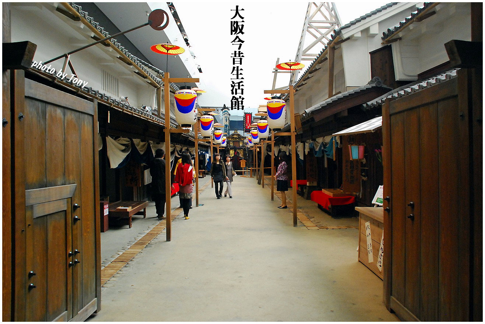
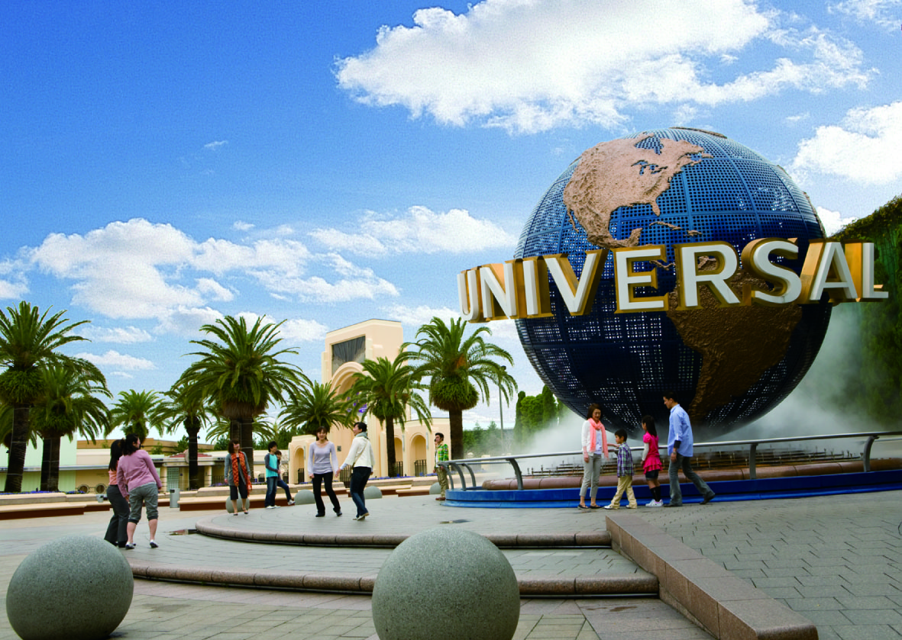
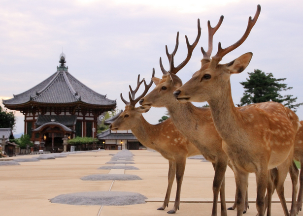
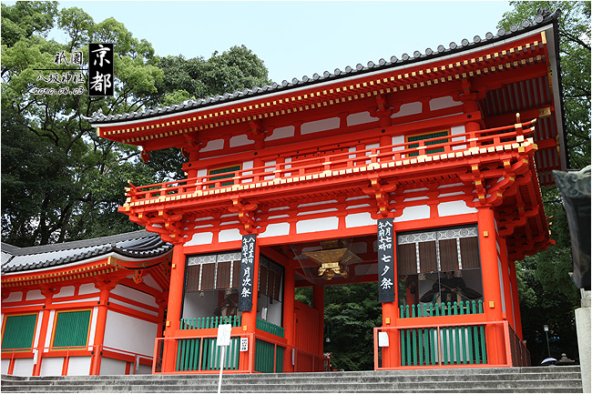
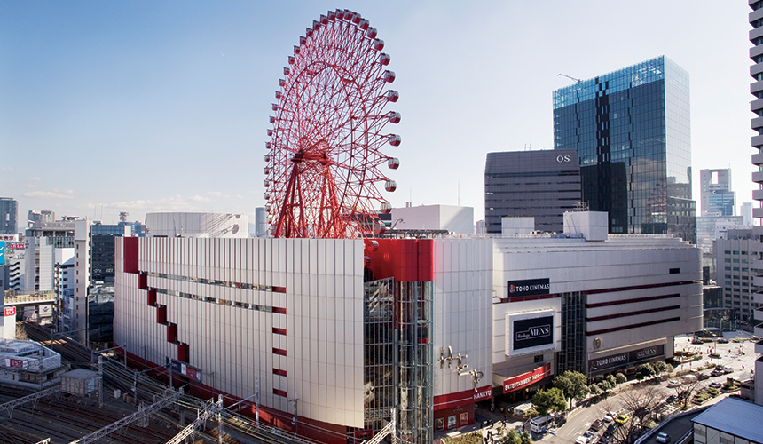

道頓堀是一條位於日本大阪府大阪市的運河，以鄰近的戲院、商業及娛樂場所聞名。道頓堀與木津川及東橫堀川連接，全長約2.9公里，其名字亦成為大阪市中央區一個町的名稱。
今日的道頓堀是大阪的一個主要商業區域，沿運河兩岸設有商店街及不少飲食店。河畔的大型霓虹廣告牌，也成為大阪的著名標誌，而蟹道樂（かに道楽）總店及門外長30呎的大型蟹模型是道頓堀另一著名地標。
道頓堀上的固力果霓虹廣告堪稱世界最有名戶外廣告板，早於1935年設立。廣告板分別於1955年、1963年、1972年、1996年、1998年及2014年進行更換。在2002年韓日世界盃舉行期間，曾被換成日本國家足球隊的球衣，為日本打氣。2011年3月，日本東北大地震發生後，廣告旁貼上勉勵的布條。2014年10月第6代的廣告板轉用14萬枚LED燈，背景可不斷轉動。

這是日本首個以大阪的「住宅和生活」為主題的博物館。館內以實物大小重現了江戶時代後期的大阪街市風光。商家・交流所・澡堂，可以充分感受到當時的繁華。
心齋橋車站是一個屬於大阪市營地下鐵系統的地下鐵車站，位於日本大阪府大阪市中央區心齋橋筋一丁目。由於地處大阪中心地區眾所周知的著名購物區，擁有極大的進出旅運量。心齋橋在2000年時入選第一次近畿車站百選。

日本環球影城位於日本大阪市此花區，是世界4個環球影城主題公園之一，1998年10月28日由美國動作演員、前加州州長阿諾史瓦辛格主持動工儀式，2001年3月31日開幕。其設計與美國奧蘭多的環球影城相近，有部份機動遊戲相同。包括《侏羅紀公園》河流探險、《魔鬼终结者2:3-D》 、《蜘蛛人》、《大白鯊》探險等。
2012年5月10日斥資5億美元擴建位於大阪市郊的環球片場，在主題公園內增加一個哈利波特園區，於2014年7月開幕。新園區內會有多個景點和遊戲，包括外觀完整重現的霍格華茲城堡、活米村。

奈良公園位於奈良縣奈良市東部，東西約4公里、南北約2公里，是日本最大的公園，園內遍植松樹，許多古寺、神社都在林間的空隙裡。園內1200頭的梅花鹿嬉遊其間，因此又有鹿園之稱。鹿的毛色在9至11月會漸漸換成較長的灰褐色毛，夏天則是短毛、白圓點(梅花鹿)。
東大寺是華嚴宗大本山，也稱為「金光明四天王護國之寺」，是由信奉佛教的日本聖武天皇在728年大筆投資興建，距今約有1,200餘年的歷史。聖武天皇當時在日本各地興建68餘座國分寺，東大寺是階位最高的總寺院。由於位於平城京的東方故取名為東大寺。

12月31日除夕至元旦早晨所舉辦的「朮參拜」(をけら参り)亦是知名活動。在這段期間，八坂神社會在「朮燈籠」裏點上「朮火」(祭拜過神明的凈火)。一般認為只要元旦時用「朮火」烤年糕，即可消除整年的災禍、免於病痛之苦，因此每年都有大批參拜者用「吉兆繩」取火，小心翼翼的帶回家。原本聖火用於火灶起火，但現在有灶的家庭極少，加上為了安全，早已明令「禁止攜帶朮火搭乘電車」的狀況下，唯有住在附近的居民，才可能把朮火帶回家。儘管如此，新年期間數萬人為了取朮火祈求平安，充滿活力的情景仍非常壯觀，是京都除夕特有的情景。

梅田是日本大阪市北區一個商業區，鄰近大阪主要鐵路車站大阪站及梅田站，亦是大阪的主要購物區。區內有多座高層大廈、百貨店、酒店、劇場，是西日本具代表性的高層辦公商業區域。